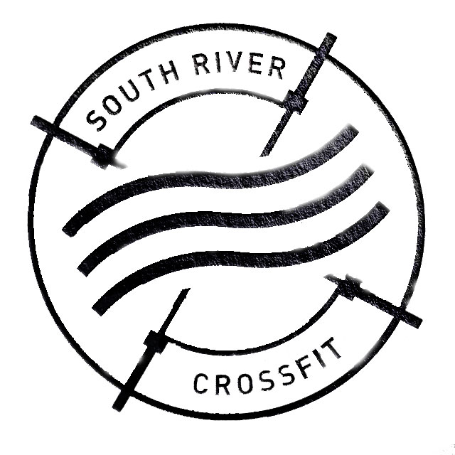

Unrivaled fitness classes. Unparalleled personal training. Studios that inspire you to perform and luxury amenities that keep you at your peak. It’s not fitness. It’s life.
South River Crossfit was built just for you.
Locations
- Miami: 123 Fake Street Miami, FL 33137
- South River: 123 South River Drive Miami, FL 33130
- Kendall: 123 Kendall Drive Miami, FL 33186
- Doral: 123 Doral Blvd Miami, FL 33178
About
-
CrossFit is an incredibly effective strength and conditioning program. The CrossFit Method will prepare you for life and sport better than any other training regime in existence today.
-
We seek innovative ways to enhance the physical and emotional wellbeing of our increasingly diverse membership base. Today, our state-of-the-art clubs span the continent,
and we’re still expanding. Our strong and successful growth stems from our commitment to understanding and meeting the distinct needs of each community we serve. With our
wide range of amenities and a highly trained staff, we provide fun and effective workout options to family members of all ages and interests.
-
Our heart-rate monitored, high-intensity workout is scientifically designed to keep heart rates in a target zone that spikes metabolism and increases energy. We call it the afterburn.